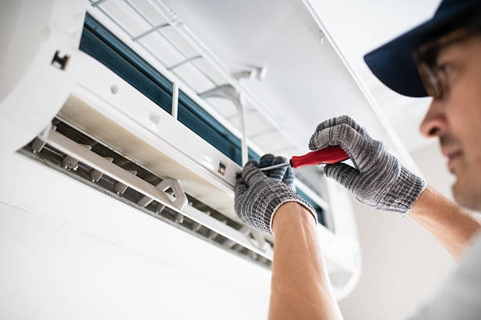

Leading Ductless Mini Split Services in Mamakating NY
Mamakating NY residents trust Monticello Ductless for exceptional ductless mini split installation and comprehensive HVAC services. Located in Sullivan County's scenic countryside, Mamakating presents unique climate challenges that our advanced ductless systems handle with remarkable efficiency. From the rural properties near Summitville to the residential developments throughout the township, we've been providing Mamakating with innovative comfort solutions that deliver superior performance in all seasons.
Mamakating's expansive rural landscape and diverse property types require specialized HVAC expertise. Our ductless mini split systems are perfectly suited for the area's varied housing stock, from traditional farmhouses and country homes to modern constructions in newer developments. Whether you need efficient climate control for a large rural property or reliable heating and cooling for a smaller residential home, our systems provide the flexibility and performance that Mamakating properties demand.
Comprehensive HVAC Solutions for Mamakating NY

Rural Property Specialists
Expert ductless installation designed specifically for Mamakating's rural properties and larger homes. Our systems handle the unique challenges of expansive spaces while maintaining energy efficiency and optimal comfort.

Agricultural HVAC Solutions
Specialized climate control for Mamakating's agricultural buildings, workshops, and commercial structures. We design systems that maintain consistent conditions while controlling operational costs.

Emergency Repair Services
24/7 emergency HVAC repair throughout Mamakating's rural areas. Our rapid-response team is equipped to reach remote properties and restore your comfort quickly and professionally.

Energy Efficiency Programs
Comprehensive energy efficiency solutions for Mamakating properties. We help reduce utility costs while improving comfort through advanced ductless technology and smart controls.
Why Mamakating NY Chooses Ductless Technology
Mamakating's rural character and expansive properties create unique HVAC challenges that make ductless mini split systems particularly beneficial. The township's varied topography, from valley floors to hillside properties, creates microclimates that require adaptive comfort solutions. Traditional HVAC systems often struggle with the long ductwork runs required for larger rural properties, but ductless technology provides efficient, zone-specific comfort without the energy losses associated with extensive ductwork.
The flexibility of ductless systems makes them ideal for Mamakating's diverse property types, from historic farmhouses to modern rural homes. These systems can easily accommodate additions, converted barns, workshops, and other outbuildings that are common on Mamakating properties. Whether you're heating a restored 19th-century farmhouse or cooling a modern workshop, ductless technology provides precise control and excellent efficiency.
Mamakating-Specific Benefits:
- Rural Property Efficiency: Optimal performance for larger homes and expansive properties
- Zone Control: Individual comfort control perfect for multi-purpose rural buildings
- Energy Savings: Reduce heating and cooling costs by up to 40% on large properties
- Quiet Operation: Whisper-quiet performance ideal for Mamakating's peaceful environment
- Versatile Installation: Perfect for main homes, guest houses, workshops, and agricultural buildings
- Reliable Performance: Consistent operation in Mamakating's varying elevation and weather conditions
- Low Maintenance: Reduced service requirements ideal for remote rural locations
Mamakating Installation Excellence
Our Mamakating installation process is specifically designed for the unique requirements of rural properties and larger homes. We understand the challenges presented by expansive properties, varying elevations, and the need for multiple zones in different buildings. Our approach considers factors specific to Mamakating, including property size, building types, electrical service availability, and the specific comfort requirements of rural living.
Mamakating's building codes and rural property considerations are carefully addressed in every installation. Our team is experienced in working with well water systems, septic considerations, and the electrical service variations common in rural areas. We coordinate with local utilities and building departments to ensure all installations meet Sullivan County standards while optimizing performance for rural conditions.
1. Comprehensive Rural Property Assessment
Our detailed evaluation considers Mamakating-specific factors including property size, building types, elevation variations, electrical service capacity, and the unique comfort requirements of rural living. We assess all structures requiring climate control.
2. Multi-Zone System Design
We engineer systems specifically for Mamakating's rural properties, designing multi-zone solutions that efficiently serve main homes, guest houses, workshops, and agricultural buildings while maintaining optimal energy efficiency.
3. Professional Rural Installation
Our experienced technicians complete installation with attention to rural property requirements, including proper electrical service, outdoor unit placement for optimal performance, and coordination with existing rural infrastructure.
4. System Optimization and Training
After installation, we optimize your system for Mamakating's rural conditions and provide comprehensive training on operation, maintenance, and troubleshooting to ensure reliable performance year-round.
Complete Mamakating NY Coverage
Our service territory encompasses all of Mamakating, from the village of Summitville to the rural properties throughout the township. We understand the unique characteristics of different Mamakating areas, from the valley properties near the Basher Kill to the hillside homes with expansive views. Our technicians are experienced in navigating rural roads and accessing properties in all weather conditions.
Mamakating's extensive rural area requires specialized service capabilities. Our service vehicles are equipped for rural property access, and our technicians understand the unique challenges presented by well water systems, septic considerations, and the electrical service variations common in rural areas. This rural expertise ensures reliable service regardless of your property's location within Mamakating.
Mamakating Service Areas:
- Summitville village and surrounding residential areas
- Wurtsboro Hills and elevated properties
- Basher Kill valley properties and wetland areas
- Route 209 corridor properties
- Rural farmsteads and agricultural properties
- Mountain and hillside residential developments
- Creek and stream frontage properties
- Remote properties throughout the township
Agricultural and Commercial HVAC Solutions
Mamakating's agricultural heritage requires specialized HVAC solutions for barns, workshops, processing facilities, and other agricultural buildings. Our commercial ductless systems are ideal for these applications, providing precise climate control that protects livestock, equipment, and stored products while maintaining energy efficiency and operational cost control.
Agricultural applications in Mamakating often require different comfort conditions than residential spaces. Our systems can maintain specific temperature and humidity ranges essential for livestock comfort, equipment protection, and product storage. We design solutions that work reliably in dusty, humid, or challenging agricultural environments while providing the flexibility to accommodate seasonal operational changes.
Mamakating Agricultural Applications:
- Livestock barns and animal housing facilities
- Equipment storage and maintenance buildings
- Product processing and storage facilities
- Workshops and repair facilities
- Greenhouse and growing operations
- Farm offices and administrative buildings
- Equipment washing and maintenance areas
Energy Efficiency for Mamakating Properties
Mamakating property owners benefit significantly from the energy efficiency of ductless mini split systems, especially given the larger spaces and multiple buildings common on rural properties. These advanced systems can reduce heating and cooling costs by 35-40% compared to traditional HVAC systems, providing substantial savings that are particularly meaningful for larger rural properties with higher energy demands.
The efficiency advantages are especially pronounced in Mamakating's rural setting, where properties often have multiple buildings requiring climate control. Our ductless systems eliminate the energy losses associated with long ductwork runs while providing precise zone control that prevents heating or cooling unused spaces. This targeted approach results in significant energy savings and improved comfort.
Mamakating Energy Benefits:
- Up to 40% reduction in annual energy costs for large properties
- Zone control eliminates heating/cooling unused spaces
- ENERGY STAR certified equipment options
- Rural utility rebate program assistance
- Smart control integration for automated efficiency
- Reduced electrical service requirements compared to traditional systems
Mamakating Maintenance Excellence
Protect your investment with our comprehensive maintenance programs designed specifically for Mamakating's rural environment and challenging conditions. Our maintenance approach considers the unique factors affecting HVAC systems in rural areas, including dust from agricultural operations, seasonal pollen loads, and the extended operating hours common on agricultural properties.
Mamakating property owners enrolled in our maintenance programs experience fewer emergency service calls and extended equipment life. Our maintenance schedule accounts for the seasonal demands of rural properties, including increased usage during agricultural busy seasons and the preparation required for extreme weather conditions.
Rural Maintenance Program Features:
- Priority emergency service for rural properties
- Seasonal system optimization for agricultural demands
- Extended parts and labor warranties
- Specialized rural environment maintenance procedures
- Preventive component replacement scheduling
- Energy efficiency monitoring and optimization
- Agricultural environment air quality considerations
24/7 Emergency Service in Rural Mamakating
HVAC emergencies in Mamakating's rural areas require specialized response capabilities, and our 24/7 emergency service is equipped to handle the unique challenges of rural property service. Our emergency response team understands rural road conditions, property access requirements, and the critical nature of climate control for agricultural operations and rural living.
Rural emergencies often present additional challenges, including accessibility during severe weather and the potential impact on livestock or agricultural operations. Our emergency technicians are prepared for these situations and carry extensive parts inventory to resolve most issues on the first visit, minimizing disruption to your rural operations.
We maintain specialized equipment for rural service calls and have established relationships with local suppliers to ensure rapid parts availability when needed. Our emergency service covers all aspects of ductless system failures, from complete system breakdowns to component-specific issues that could affect agricultural operations.
Mamakating Customer Experiences
"Our farmhouse in Mamakating was always difficult to heat efficiently until we installed the ductless system. Now every room is comfortable, our workshop stays warm, and our energy bills are much lower. The installation team understood our rural property needs perfectly."
- Michael and Sarah D., Rural Mamakating NY"The ductless system in our barn has been perfect for our livestock operation. It maintains consistent temperatures regardless of outside conditions, and the energy efficiency has exceeded our expectations. Excellent service from Monticello Ductless."
- Robert K., Agricultural Property, Mamakating NY"When our heating system failed during a winter storm, Monticello Ductless managed to reach our remote property and restore our heat the same day. Their rural emergency service is outstanding, and we couldn't be more grateful."
- Janet L., Remote Property, Mamakating NYContact Mamakating's Rural HVAC Specialists
Ready to experience the comfort and efficiency of professional ductless mini split installation for your Mamakating property? Contact Monticello Ductless today for your free consultation. We specialize in rural property HVAC solutions that deliver superior comfort, efficiency, and reliability for all your buildings and applications.
Schedule Your Free Mamakating Consultation
📞 Phone: (888) 918-9104
🏠 Service Area: Mamakating NY and surrounding Sullivan County rural areas
⏰ Hours: Monday-Friday 7AM-7PM, Saturday 8AM-5PM
🚨 24/7 Emergency Service Throughout Rural Mamakating
🚜 Agricultural and Rural Property Specialists
💼 Residential and Commercial Services Available
Transform Your Mamakating Property
Experience the superior comfort, efficiency, and reliability that professional ductless mini split installation provides for rural properties. Our Mamakating specialists are ready to design and install the perfect system for your specific needs and agricultural requirements.